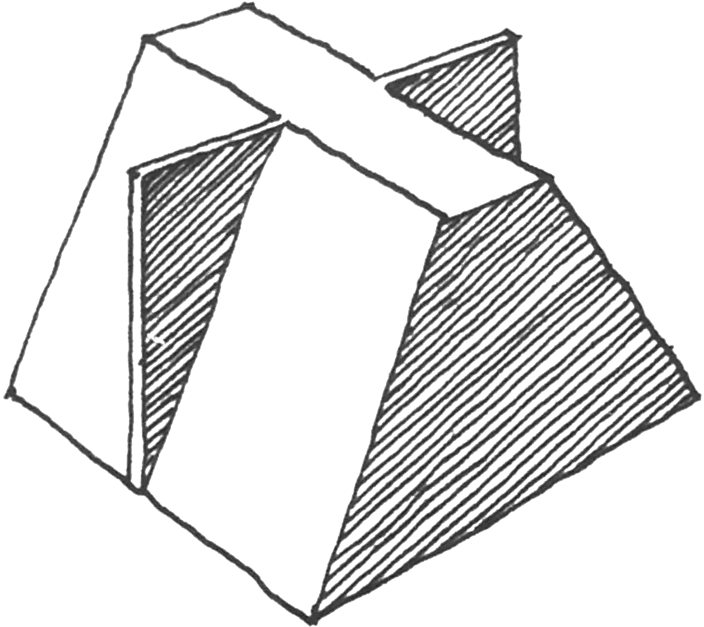
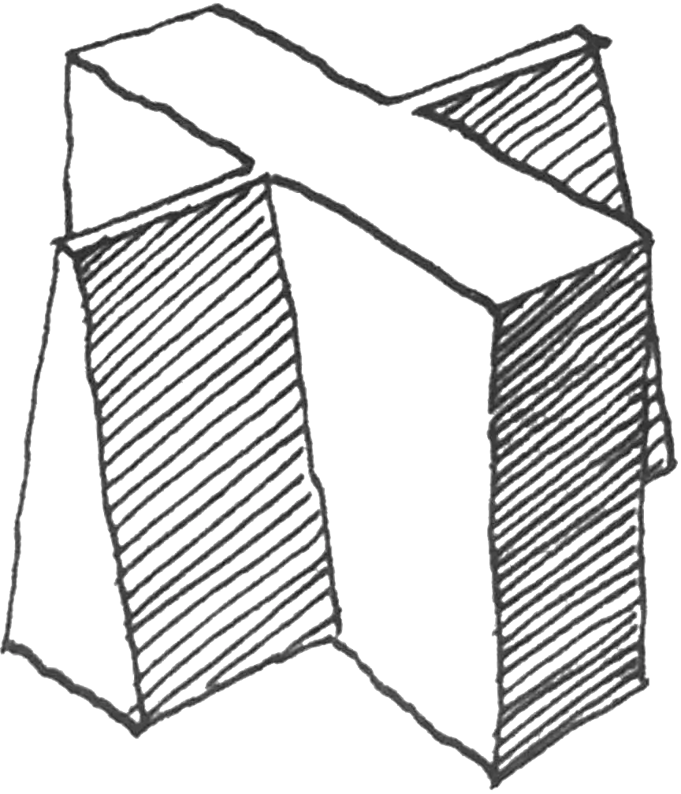
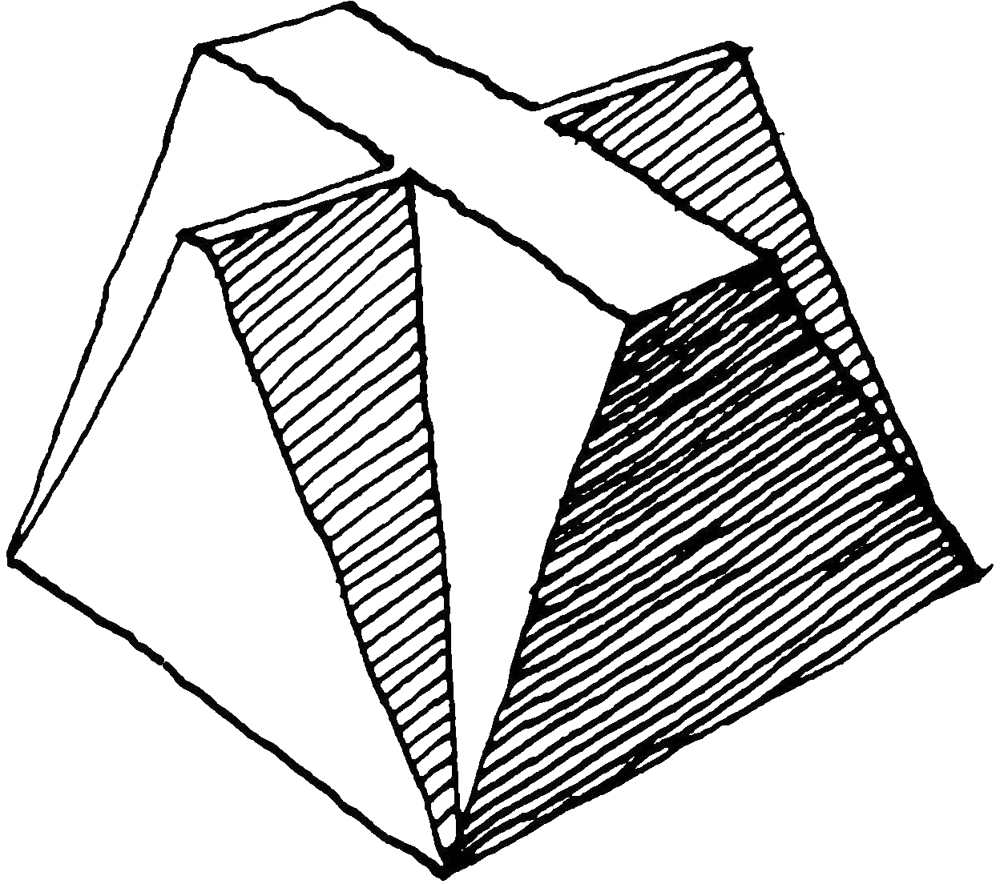
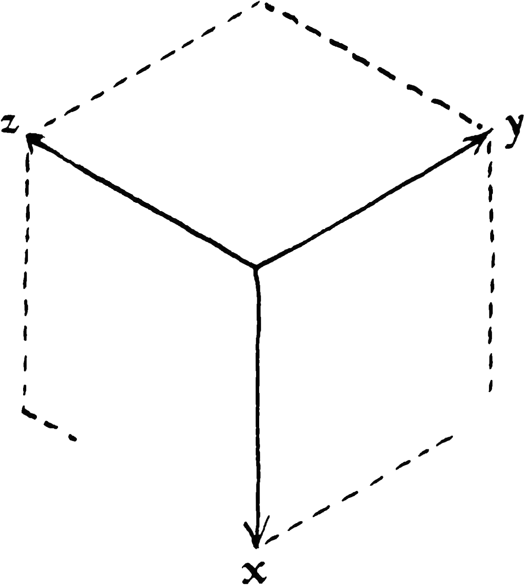
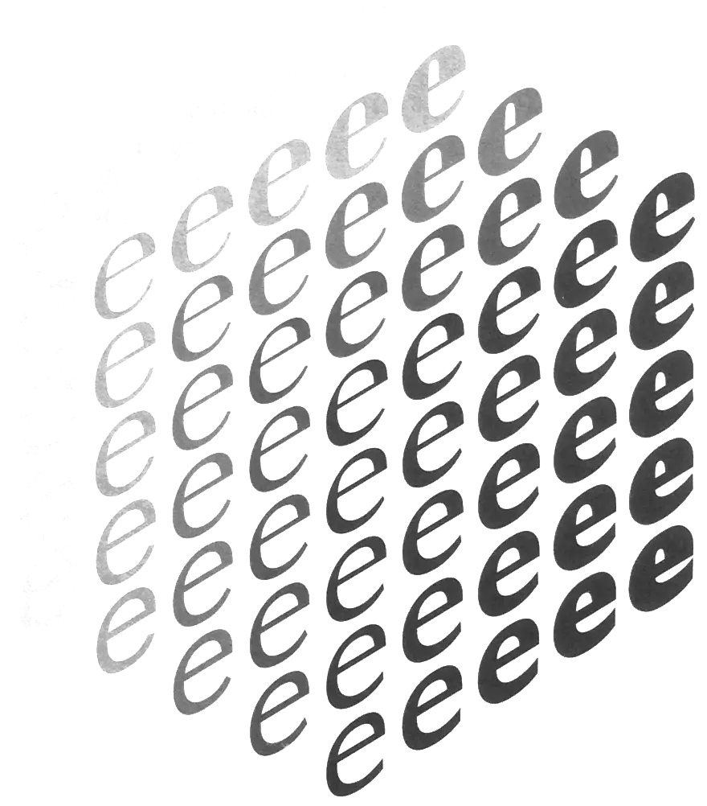

Western civilization begins with the invention of the word image. I have presented the middle ages as the period in which the word image is consolidated. This simplification puts me in a position to keep at a distance nuances that might hinder the view of the main lines. What does fall into view comes down to an increase in the contrast of the stroke. I can take this synopsis even further, for now our perspective is no longer limited to that of mediaeval translation. Increases in contrast can just as well happen in nineteenth-century western typography as in Bengalese calligraphy - of which I am, incidentally, ignorant.
Figure 8.1 is a model of such an increase in contrast. The top of the block is a cross with a given contrast. Proceeding towards the bottom the thicker stroke becomes thicker, so that every horizontal cross-section shows a greater contrast than the top. An end of increases in contrast is reached when the thin stroke no longer has a meaning: at the bottom of the block the cross has turned into a rectangle.
In figure 8.2 the thin stroke becomes thicker towards the bottom. The effect is a decrease in contrast. The endpoint of this decrease is reached when the strokes are equally thick.
From this perspective an increase in contrast and a decrease in contrast are not simply each others' opposites, they exist at right angles to each other. Both operations involve a thickening of the stroke: increases in contrast involve a thickening of the thick part of the stroke, while with decreases in contrast the thin part of the stroke becomes thicker. This way of seeing rests upon the a priori that writing has contrast. The alternative to this a priori falls outside of my powers of representation. Without it, I cannot imagine a single explanation for the development of writing, for the cohesiveness of the great cultures, or even the total failure of education.
If my model for the increases and decreases in contrast makes sense, then it is strange that we so easily capture, in a single overarching scheme, various degrees of increase in contrast (as the middle ages or as the various gradations of type) but not the various degrees of diminution. For the average person and even for the average typographer the cross sections of the block in figure 8.1 belong together, but not those of figure 8.2. The bottom of figure 8.2 is the domain of the sanserif, and for almost everyone, that is a world unto itself. Figure 8.2 however compels one to conclude that the sanserif does not exist as an autonomous category.
In the block of figure 8.3 the thinner stroke as well as the thicker stroke becomes thicker. The decrease in contrast catches up with the increase in contrast, but when they coincide, the white has disappeared.
This is an open-ended closing. While the three blocks might well be a conceptual artifice that can strengthen my grasp of changes in contrast, they do not provide the inexorable closure of a theory. For the theory, I expect more from the three-dimensional coordinate system in figure 8.4.
For handwriting the equation x = y = o holds. The z-axis runs from translation to expansion. For cultural history this means, from classical to classicistic, and, for cultural anthropology, this means from western (semitic) to eastern (Chinese). On the x-axis increasing contrast is set out and on the y-axis contrast reduction. Interpolation of the vari ous points on the three axes produces an array of points that, taken together, form a cube.
Figure 8.5 shows the cube that, by way of example, is con stituted by interpolations of the letter e. The 125 letters can each be denominated with an x, y, and z coordinate. In this case the x, y, and z stand for a number between 1 and 5, but in principle, each axis comprises an infinite number of positions. (Of the 156 letters, 64 are invisible in figure 8.5.)